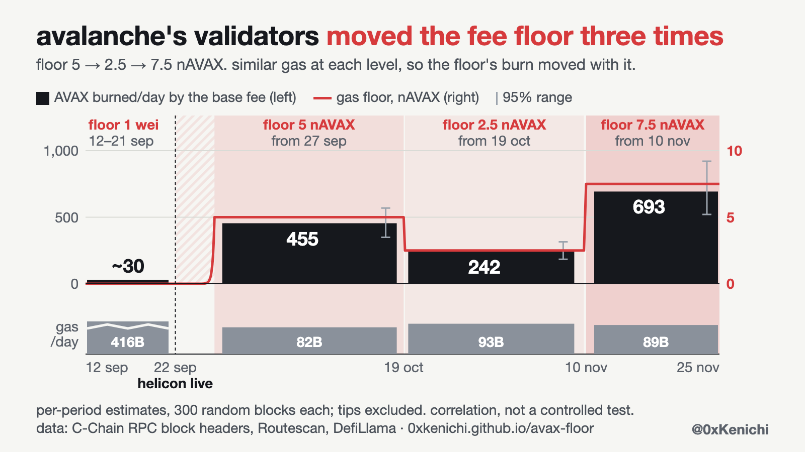
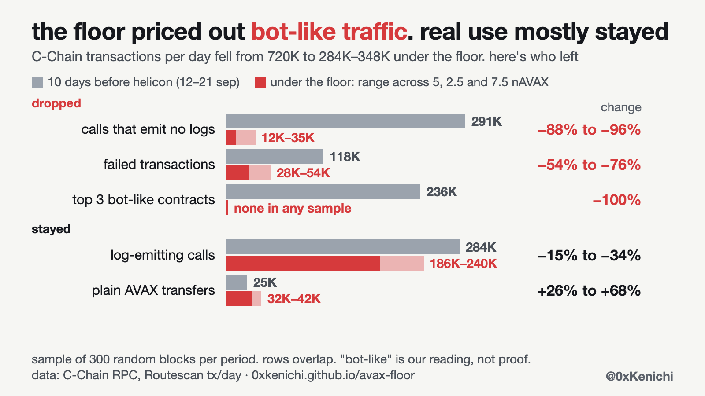

What happened when Avalanche validators moved the gas floor?
Avalanche C-Chain, 1 Aug – 25 Nov 2026 (UTC). After Helicon (ACP-283), validators vote the minimum gas price. They set it to 5 nAVAX, cut it to 2.5, then raised it to 7.5. Free public data, no API keys, reproducible.
At every new floor level the chain used about the same amount of gas (82B–93B a day), so the burn that comes from the floor moved with it: about 240 AVAX a day at 2.5 nAVAX, 455 at 5 and 690 at 7.5, against about 30 before Helicon. Transactions fell about 60% when the floor first bound. Most of what left looks like bot traffic. Burned fees rose from 2.4% of app fees to 3.8–4.9%.
The floor and the burn
Base-fee burn per day (tips excluded), from 300 random whole blocks per period, with 95% bootstrap ranges. Gas used per day below. Sources: C-Chain RPC block headers and receipts, Routescan.

Floor changes, from block headers
The floor in wei is 2^(minPriceExponent / 2^58), read from each header. Source: floor_changes.csv.
| Change | First block | Started (UTC) | Reached (UTC) |
|---|---|---|---|
| Helicon live: 1 wei → 5 nAVAX | 95,921,105 | 22 Sep 15:00 | 27 Sep 06:06 (block 96,241,276) |
| …passes the market base fee (0.1 nAVAX) | 96,185,920 | 26 Sep 09:52 | |
| 5 → 2.5 nAVAX | 97,979,371 | 19 Oct 15:16 | 19 Oct 19:10 (block 97,994,369) |
| 2.5 → 7.5 nAVAX | 99,889,866 | 9 Nov 23:14 | 10 Nov 05:14 (block 99,910,288) |
Before and after
Full UTC days at one floor level; days when the floor was moving are left out. App fees from DefiLlama. Source: regimes.csv.
| Period | Days | Floor | Tx/day | AVAX burned/day (median) | App fees/day | Burn ÷ app fees | AVAX price |
|---|---|---|---|---|---|---|---|
| Aug | 31 | 1 wei | 2,228,642 | 430 | $271,240 | 1.31% | $6.82 |
| 12–21 Sep (last 10 days before) | 10 | 1 wei | 719,652 | 704 | $306,478 | 2.44% | $8.35 |
| 28 Sep – 18 Oct | 21 | 5 nAVAX | 283,548 | 1,304 | $330,623 | 4.50% | $10.68 |
| 20 Oct – 8 Nov | 20 | 2.5 nAVAX | 297,067 | 827 | $263,047 | 3.82% | $8.79 |
| 11 – 25 Nov | 15 | 7.5 nAVAX | 347,741 | 1,724 | $254,416 | 4.91% | $7.28 |
Who left
300 random whole blocks per period, 20,184 transactions with receipts, scaled to Routescan's tx/day. Source: who_summary.json, who_top_to.csv.

- Before Helicon, not caused by the floor: in August, 69% of all transactions (about 1.55M a day) went to three contracts whose Routescan verified name is XPower. That traffic switched on and off and stopped after 11 Sep, 11 days before Helicon. Most of the fall from August's 2.2M tx/day happened then.
- When the floor bound: calls that emit no event log fell from about 291K to 12K–35K a day, failed transactions from about 118K to 28K–54K. Three unverified contracts fed by 1, 1 and exactly 100 senders (about 236K tx/day together) appear in no post-floor sample.
- What stayed: log-emitting calls (such as token transfers) went from about 284K to 186K–240K a day; plain AVAX transfers held at 25K–42K. Some traffic is new: an oracle contract (
CompressedOracleV1) absent before Helicon reached about 52K/day at 7.5 nAVAX.
Caveats
- Correlation, not a controlled test. The 5 → 2.5 → 7.5 order rules out a simple time trend, but other events in the same weeks could move the series.
- Transactions were already falling before Helicon, so the size of the drop depends on the baseline (−61% vs the 10 days before, −87% vs August).
- AVAX went from about $7.9 to $10.9 around 22 Sep, then to $6.40 by 25 Nov. USD figures carry this; AVAX figures don't.
- Tips are still most of the burn and too noisy to show a floor effect. The floor-driven part is about 240–690 AVAX/day, roughly $1.5K–4.4K/day at late-November prices.
- App fees per day were 14–17% lower in the two later periods than before Helicon, alongside the falling price. This data can't show whether the floor played a part.
- The 7.5 period has 15 days. "App fees" are DefiLlama fees, not the Foundation's protocol revenue. "Bot-like" is a reading of the patterns, not proof of intent.
Cross-checks and calibration
- Burned AVAX per day: Routescan vs Avalanche metrics API −0.01% over 111 days; vs DefiLlama chain fees +0.46% (USD). Tx counts match the metrics API to 0.01%. crosscheck.json
- Against the Avalanche Foundation's published figures: C-Chain fees Jan 2025–Aug 2026 $9.53M–9.75M vs $9.6M; app fees $264.1M vs protocol revenue $282.2M (−6.4%); Aug 2026 tx/day 2,228,642 vs 2.23M. Misses: Jan 2025 fee ratio 3.11% vs 5.79%; burn since 2024 $26.6M–27.3M vs ≈$23.5M. calibration.json
Method
- Floor: one C-Chain header about every hour from 1 Aug (2,703 headers), then bisection to the exact first block of each change. 1,104 of 1,535 post-Helicon samples have a base fee exactly equal to the computed floor.
- Daily series: Routescan daily tx and fees (AVAX; all C-Chain fees are burned), AVAX price at 12:00 UTC from DefiLlama, DefiLlama app fees (all protocols on Avalanche, chain gas fees excluded).
- Who left: 300 block numbers per period drawn uniformly at random (seed 283), each full block with receipts; every transaction classed as native transfer, call with logs, call without logs, failed or creation. Labels are Routescan verified contract names only.
python3 -I fetch.py && python3 -I floor.py && python3 -I analyze.py && python3 -I sample.py && python3 -I who.py
Python 3.9 standard library only. Scripts: fetch.py · floor.py · analyze.py · sample.py · who.py · regimes.py · netlib.py. Full write-up: results.md · README.md.
Data: chart_daily.csv · chart_regimes.csv · daily.csv · regimes.csv · floor_changes.csv · headers_hourly.csv · sample_txs.csv.gz · sample_blocks.csv · who_track.csv
Sources
- Avalanche Foundation: Economic Research Agenda · agenda launch (30 Jul 2026) · Gross Chain Product (7 May 2026) · Gross Chain Income (12 Aug 2026) · The Price of a Transaction (5 Nov 2026)
- C-Chain RPC:
api.avax.network/ext/bc/C/rpc,avalanche-c-chain-rpc.publicnode.com - Routescan API (chain 43114):
api.routescan.io/v2/network/mainnet/evm/43114/etherscan/api - DefiLlama:
api.llama.fi/overview/fees/avalanche,api.llama.fi/summary/fees/avalanche,coins.llama.fi - Cross-checks: CoinGecko public API, Avalanche metrics API (
metrics.avax.network)
Data pulled 26 Nov 2026. By Kenichi (@0xKenichi). Independent work, not affiliated with the Avalanche Foundation or Ava Labs.